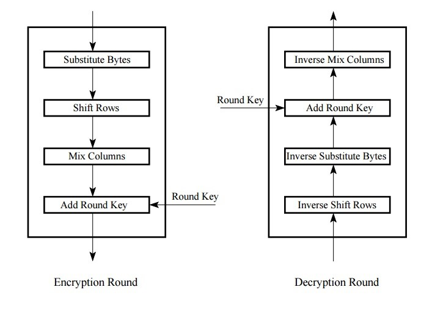

"AES implementation for Encryption and Decryption."
project soundbyte
Advanced Encryption Standard (AES), a Federal Information Processing Standard (FIPS), is an approved cryptographic algorithm which can be used to protect electronic data. The main idea of this project is to demonstrate the acceleration that can be achieved in executing this computation intensive encryption/decryption algorithm on hardware. FPGAs with their highly parallel, reconfigurable architecture are best suited for this project. To achieve this, we plan to build an SoC system with a NIOS II softcore processor instantiated inside an Altera Cyclone IV FPGA. As an outcome of this project, we should be able to encrypt/decrypt a huge chunk of data read from an SD card. In addition, we expect the execution time to be much lower for the hardware implementation when compared to its software counterpart.
{kind=link}
High Level Design top
Altera DE2-115 development board has been used in executing this project. The design features an SD card which allows us to read any text files for encryption/decryption, JTAG UART for receiving the keys for encryption from the host PC and a VGA monitor to display the original image and encrypted image and an Altera Cyclone IV FPGA which holds the logic of the algorithm.
Rationale and Inspiration
The primary goal was to design a system that can encrypt and decrypt any size of text or image. Advanced Encryption Standard(AES) is one of the most well known advanced encryption standards for electronic data. This standard is also referenced as Rijndael and the algorithm was standardised by by the U S National Institute of Standards and Technology in 2001. The nature of the encryption and the decryption flows make it highly amenable for parallelization which lends very well to the architecture of FPGAs. Thus, we came up with a fully pipelined hardware design that exploits the nature of the algorithm to achieve a significantly higher throughput. Also, since FPGAs are nowadays used as hardware accelerators for CPUs, we felt that this project might help us understand the complexities involved in such implementations.
Background Math of AES Encryption/Decryption
AES algorithm involves 10 rounds of processing for 128-bit Key. Each round consists of these 4 steps : One single-byte based substitution step, a row-wise shifting step, a column-wise mixing step, and the addition(XORing) of the round key. Out of all the rounds, the last round will be doing only three of the above steps. It will exclude the column mixing step.
We generally take a group of 16 characters ( 128 bits), store them in a matrix format and initially will XOR it with the input key (in case for encryption) or with last key generated by the key expansion module (for decryption) and then pass it for a round based processing. the output of every round will be an input to the subsequent round. Below are the 4 steps performed by every round (except the last round)
Substitution Step:
In this step, we can substitute every character for encryption by using the S-Box, S-Box is a 16X16 matrix of different Hexadecimal numbers. Each of the input character is converted into their hexadecimal values, the the 4 msb bits will be used to indicate row number and the remaining 4 bits will be used to indicate the column number in a S - Box. The input character is substituted with the one in that position. below is the S-Box used for encryption:
Figure 1: SBox
Similarly for decryption we will be having an inverse S-Box shown below
Figure 2: Inverse SBox
Row based Shifting :
In this step, the first row is left as it is, the second row gets circularly shifted to the left by one character, the third row gets shifted by two characters and the fourth row by three characters. It would look like this shown below:
Figure 3: Row Based Shifting
in the case for decryption, we will be doing this by circularly shifting to the right side instead.
Column Mixing :
Here, we will multiply the input matrix with a Mix Matrix. There are two things about this multiplication different from a normal matrix multiplication :
a. We will be performing galois multiplication between two characters.
b. We will be performing galois multiplication between two characters.
The mix matrix for encryption is :
Figure 4: Mix column encryption
The mix matrix for decryption is :
Figure 5: Mix column decryption
Except for round 10, all the other rounds will be performing this step.
Using Round_Key
In this stage we will be performing XOR operation with the round key generated by the key_expansion module. The output of this round will be sent to the next round. To know how the keys are generated, we first have to understand the key expansion module
Key Expansion Module
Initial Key
Generation of 44 word key
K0,K1...K15 are the 16 characters which make up the key(128 bit long), We group each column into one word and pass it to the key expansion module. From the given initial key we are supposed to generate a 44 word length key. The first four words are the 4 words of the initial key. The remaining keys are generated using the following operations:
W(i) = W(i-4) XOR g(W(i-3))
W(i+1) = W(i-3) XOR W(i)
W(i+2) = W(i-2) XOR W(i+1)
W(i+3) = W(i-1) XOR W(i+2)
Note: i should be a multiple of 4.
W(i), W(i+1), W(i+2) and W(i+3) are combined to generate the key for the next round. The function g() is explicitly used only for generating W(i). The function g() consists of the following three steps: –
a. Perform a one-byte left circular rotation on the argument 4- byte word.
b. Perform a byte substitution for each byte of the word returned by the previous step by using the S-Box
c. XOR the bytes obtained from the previous step with what is known as a round constant. The round constant is a word whose three rightmost bytes are always zero.
The round constants for every round is as follows :
RC[1] = 0x01
RC[j] = 0x02 × RC[j − 1]
This function mainly adds to the latency in the key expansion module.
Both encryption and decryption will be performing these 4 steps, but the order in which they will be performing is different :

Key expansion
Logical Structure
The hardware implementation consists of two 10-stage pipelines of the encryption and decryption modules. SDRAM serves as the main memory for the Nios II processor. The processor is responsible for reading the plain-text data from the SD card for the encryption process. The 128-bit key for the process is obtained serially from the JTAG-UART terminal interfaced to the processor. The encrypted and decrypted values are reported to the user via the console and the VGA monitor. The interactions between the hardware and the processor occurs through PIO ports instantiated using the SOPC builder.
Hardware/Software Tradeoffs
Since the purpose of this project was to demonstrate hardware acceleration of algorithms we decided that the entire encryption and decryption logic would be implemented in hardware. Although a software implementation would have had a lower development time, it is impossible to achieve the level of performance of that of a hardware implementation.
Relationship of Design to Standards and Patents
The Advanced Encryption Standard (AES) is defined in each of FIPS PUB 197: Advanced Encryption Standard (AES) and in ISO/IEC 18033-3: Information technology - Security techniques - Encryption algorithms - Part 3: Block ciphers. Also, our project adheres to the standards set by the SD Association for using the SD card through an SPI interface.
Software Design top
The Nios II runs a C program that controls the hardware modules and interfaces with the SD card. The program implements a user interface that initially prompts the user to enter the 128-bit key. This key is then sent to the hardware using four PIO ports. Once the processor is done placing the key on the PIO buses an interrupt is sent to the hardware to indicate the availability of a valid data on the buses.
The user is then prompted to press key 3 to start the encryption process. Once key 3 is pressed, the processor reads the data from the SD card and stores them in a buffer. The CPU then polls for the requests from hardware to read the SD card data. Data from the SD card is sent in chunks of 128 bits upon receiving the interrupt/request from the hardware.
After sending all the data, the processor polls for the data ready PIO from the hardware. The hardware is supposed to indicate the Nios once it is done with the encryption/decryption process. Upon receiving the interrupt from the hardware, the program reads the encrypted data from the PIO buses and is stored in an array/buffer. For every interrupt, 256 bits of data are read from the hardware. The processor then interrupts the hardware every time after it is done reading from all the PIO buses.
After sending all the data, the processor polls for the data ready PIO from the hardware. The hardware is supposed to indicate the Nios once it is done with the encryption/decryption process. Upon receiving the interrupt from the hardware, the program reads the encrypted data from the PIO buses and is stored in an array/buffer. For every interrupt, 256 bits of data are read from the hardware. The processor then interrupts the hardware every time after it is done reading from all the PIO buses.
Reading data from the SD card was a challenge considering that there is no SD card controller IP support for DE2-115 boards. However, we found an example code and software drivers to read the SD card contents. We later decided to drop the idea of writing back the encrypted data into the SD card since figuring out the reading part had already taken more time than we had anticipated. We were suggested to move our project to DE2-board which has the SD card controller support as well as example programs for both reading and writing contents to the SD card but it comes with a Altera Cyclone II FPGA which supports lesser area when compared to the Cyclone IV of DE2-115. So, we felt that since our project was hardware intensive migrating to a lower end FPGA would be risky and hence decided against the suggestion.
Although we planned to demonstrate both encryption and decryption features we were only able to successfully demonstrate the encryption feature under the given timeline. However, we could successfully test the encrypter and decrypter modules in ModelSim and verified their functionality. Another challenge was handling large chunks of data. We tried to use FIFOs to store the encrypted data at the output of FPGA before sending them to the Nios. Due to certain timing issues we weren’t able to successfully read the output data from the FIFOs. Hence, the current design only supports encryption of 128 bits of character data. However, with additional effort one can extend this project to support encryption of huge chunks of data - from a text file or an image. Also, one can make use of the decrypter module to demonstrate AES decryption.
Hardware Design top
Nios Processor
A Nios II processor is used as the CPU to control all the modules in the project. SDRAM acts as the memory for the processorI. A JTAG UART interface was also connected to the Nios II for serial communication with a computer so that a user can manually enter in encryption or decryption keys. Since SOPC builder is unable to instantiate PIO ports of size greater than 32 bits, each 128 bit port had to be instantiated as four separate 32 bit ports. When reading from the ports, the four 32 bit inputs from the ports are concatenated in software to get the 128 bit data. When writing to the ports, the data is divided equally among the 4 PIO ports.
Hardware Implementation of the Encryptor and Decryptor :
The configuration for each round block would be like :
Figure 6: Single Block of Encryption/Decryption
Here each encryption/decryption block, will be getting data from the previous round and will also be enabled by the previous round when they are done. We also provide a round number, so that we differentiate the last round from other rounds as it performs only three steps. We have provided some extra stages of buffering for each module to avoid timing inconsistencies.
The general block diagram for our encryptor stage would be :

Detailed block diagram explaining the 4 steps performed in each round
The general block diagram for our encryptor stage would be :
Detailed block diagram explaining the 4 steps performed in each round
In order to achieve high speedup in hardware, we have decided to pipeline our design, this will be very useful when we are dealing with large chunks of data.
Figure 7: Pipeline Diagram
After creating these modules in Quartus, we observed the following waveforms:
We can instantiate 10 such modules(R1 to R10) and pipeline them as shown in the above diagram. At an average it will take 20 clock cycles for every round.
From the above diagram we can see that for encryption 160 characters (in blocks of 16 characters) we will need a total of 380 clock cycles(19X20 cycles).
Average Time required to encrypt one character = 380/160 = 2.375 cycles (approximately 3 cycles). This is better compared to the non pipelined version, where we would require 200 cycles X 10 = 2000 clock cycles to encrypt 160 characters. Our design will be useful when we will sample a larger pool of data
Decrypter
Since there is no SD card controller available for DE2-115, SD card was interfaced to the Nios through PIOs. The FAT File System function is implemented by Nios II software. The SD Card is connected to the hardware through SD 4-bit mode protocol for communication with SD Cards. We used a part of SD card example code from Altera University Program package for reading the contents of the SD card.
SD card interface
Since there is no SD card controller available for DE2-115, SD card was interfaced to the Nios through PIOs. The FAT File System function is implemented by Nios II software. The SD Card is connected to the hardware through SD 4-bit mode protocol for communication with SD Cards. We used a part of SD card example code from Altera University Program package for reading the contents of the SD card.
JTAG UART interface
In order to display the image output from the Nios II onto a VGA monitor, we have instantiated the VGA controller. The VGA controller receives pixel data through a VGA buffer and outputs a VGA signal to the VGA connector on the DE2-115 board.
VGA monitor for image display
In order to display the image output from the Nios II onto a VGA monitor, we have instantiated the VGA controller. The VGA controller receives pixel data through a VGA buffer and outputs a VGA signal to the VGA connector on the DE2-115 board.
Results top
We were able to demonstrate encryption on 16 characters read from the SD card. The output latency was 64.40 us( approx. 322 clock cycles). The latency is high only for the first encrypted data output since all the pipeline stages are idle initially. For the subsequent data outputs the latency is just 21 clock cycles which proves that the pipelining is indeed effective in increasing the throughput. We have also verified our functionality of the algorithm, by encrypting a data sample and getting it back by decrypting it. ModelSim simulation waveforms below show that the original plain-data is recovered at the end of decryption.

Encryption
Decryption
We have also observed improvement in timing by pipelining our design, this can be shown from the following waveforms
Initial Latency for the first set of outputs
Outputs for the next sets of words immediately available.
Safety and Usability
There are no major issues that we need to consider in this project. The only human interaction involved pressing keys on the DE2-115 and keyboard to insert keys for encryption and decryption.
Conclusions top
We were able to successfully demonstrate only the encryption feature under the given timeline. However, we could successfully test the encrypter and decrypter modules in ModelSim and verify their functionality. We also learnt about interfacing with an SD card. Also, our initial plan was to design a system which would be capable of handling large data sets. But after considering the increased complexity of the design due to the addition of multiple FIFOs(M9K) blocks we decided to scale down to a relatively simpler design which can handle a limited set of data. If we could do things differently, to reduce the development time we would have had the encryption done in software and the then focus only on the hardware implementation of decryption. This would have given us more time to figure out the challenges involved in handling large chunks of data. Although we underestimated the complexity of the project, the overall learning experience was very good
Intellectual Property Considerations
The project uses Altera IP generated from SOPC builder and Megafunction wizard, including the Nios II, SDRAM controller, SD card interface, PLLs, VGA controller and SOPC PIO ports. All other code was written by us based on algorithms that are in the public domain.
Appendices top
A. Cost Details
Part Number |
Vendor |
Quantity |
Price |
Total Cost |
SD Card |
Cornell Store |
1 |
$10 |
$10 |
B. Distribution of Work
| Ashwath Laxminarayana | Ashkan Ravani | Murali Venkatraman |
|---|---|---|
| Encryption | Interfaces | Decryption |
| Final report | Final report | Final report |
| troubleshooting | troubleshooting | troubleshooting |
| Ideas | Webpage | Layout |
C. Code Listing
Decryption_pipeline.zip
aes_char_16.zip
encryption_pipeline.zip
References top
This section provides links to external reference documents, code, and websites used throughout the project.
Acknowledgements top
We thank Professor Bruce Land and the lab TAs for the debugging help and knowledge on DE2-115 FPGA board they provided this semester.